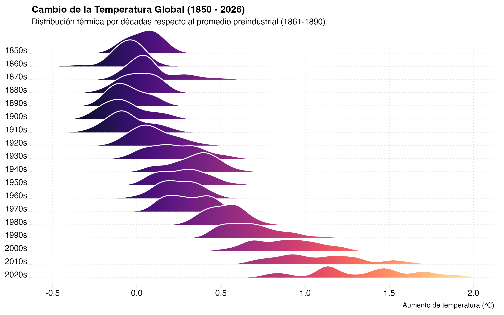

Las emisiones humanas de dióxido de carbono y otros gases de efecto invernadero son el principal motor del aumento de las temperaturas a nivel mundial. El gráfico de crestas (ridgeline chart) que se presenta a continuación documenta esta evolución térmica global a lo largo de casi dos siglos, utilizando como línea base el promedio preindustrial de 1861-1890 (el punto 0.0 en el eje horizontal).
Desde la década de 1850 hasta la de 1920, las distribuciones térmicas se mantienen estables y fuertemente agrupadas en torno al promedio histórico, marcadas por tonos púrpuras oscuros. A partir de la década de 1930, y más marcadamente desde los años 70 y 80, comienza un desplazamiento progresivo e ininterrumpido hacia la derecha.
En las últimas décadas (2010s y 2020s), el panorama cambia radicalmente: la totalidad de la curva se ha desplazado más allá del 1.0 °C de calentamiento, tiñéndose de colores de advertencia (naranjas y amarillos). Además, las distribuciones más recientes se muestran más anchas y aplanadas, alcanzando extremos cercanos a los 2.0 °C, lo que evidencia no solo un mundo más caliente, sino también una mayor volatilidad climática anual.
